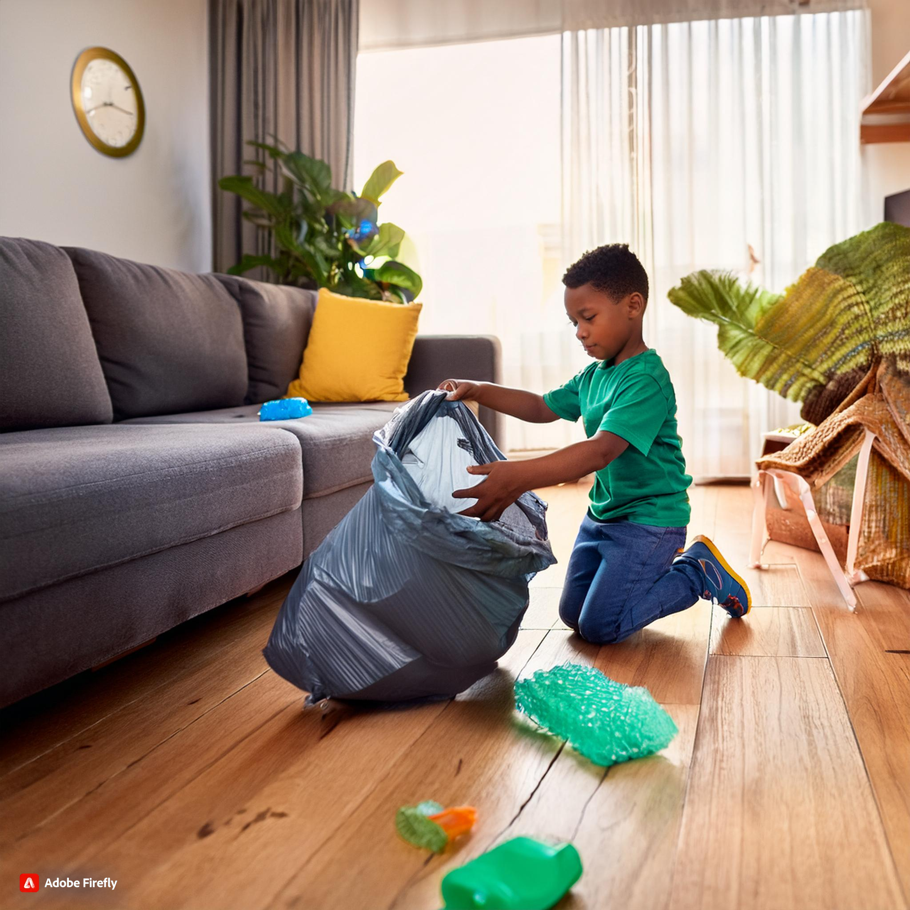

"The Role of Humanities and Social Science in Early Childhood Education"
Introduction and Importance of Humanities and Social Science in Early Childhood Curriculum
In early childhood education, the Humanities and Social Science curriculum area is essential for developing global understanding, cultural awareness, and social responsibility. This subject helps kids learn about their neighbourhood, surroundings,and wider globe by incorporating lessons from geography, history, civics, and economicsl.Children are encouraged to think critically, pose questions, and consider many viewpoints when they interact with Humanities and Social Science. Additionally, it fosters a sense of belonging, empathy,and tolerance for diversity-all of which are essential for developing into knowledgeable and engaged citizens. This curriculum area fosters creativity through role-playing, storytelling, and cultural exploration, all of which help to personalize and deepen learning. (Russ Garcia: march 31, 2023)

Resources, Materials, and Digital Technologies
Traditional Resources and Materials
- Storybooks and Picture Books: Books that help youngsters connect with a variety of experiences and viewpoints by introducing historical events, cultural tales, or societal topics.
- Maps and Globes: Children can study geography and get an understanding of place, distance, and environment with the use of maps and globes.
- Cultural Artifacts: Cultural artifacts are the items that offer firsthand exposure to a variety of civilizations, such as apparel, musical instruments, or artwork.
Digital Technologies
- Virtual Field Trips: Online platforms that extent children's worldview by taking them to historical places, museums, or other cultural landmarks.
- Digital Storytelling Tools: Applications and online communities that let children's to write, illustrate, and narrate their own stories.
- Educational Videos and Old Documentaries: Age-appropriate content that introduces children to historical events, social issues, or cultural practices.
Learning Experiences by Age Group
0-2 Years:
- Cultural Music and Dance:During the early age the child can only observe their surrounding so promoting early cultural understanding and appreciation through the introduction of songs and basic dances from many cultures.
- Simple Stories About Family and Community: Children can bette comprehend their social surroundings by reading books that examine family dynamics, volunteer organizations in the community, or daily routines.
- Inverstigating Natural Environments: Introducing fundamental ideas of geography and environment through quick hikes by carrying baby or outdoor play in the local area
2-3 Years:
- Role-Playing Community Helpers: By dressing up and using props, childs can play pretend to be teachers, firefighters, or physicians, which helps them learn about the various roles that people perform in society.
- Investigating Family and Cultural Traditions: Fostering creativity and cross-cultural understanding via the creation of easy art proejcts or culinary activities that represent various family or cultural traditions.
- Simple Geography Exploration: Using globes or maps, identify children's homes and the location of various animals and cultures to introduce the idea of place.
3-5 Years:
- Creating Personal and Family Histories: By encouraging children's to illustrate or narrate tales about their families, you can aid in their understanding of history and identity.
- Building Model Community: To promote a knowledge of how communities function, construct a model of community with roads, buildings,and people using boocks or craft supplies.
- Exploring Culrural Festivals and Holidays: Promoting tolerance for variety and an understanding of the world by honouring many cultural festivals and holidays via crafts, music,and cuisine
6-8 Years:
- Participating in Historical Events: By involving participants in role-playing or storytelling activities that delve into important historical personalities or events, you may foster empathy and critical thinking.
- Mapping Projects:Using creative design and geography, make basic maps of your neighbourhood, school or frictional locations.
- Examining Environmental Issues: Using projects or interactive digital tools, this activity explores and disusses local environmental issues, like conservation and recycling, while encouraging problem-solving and a sense of responsibility.
Pedagogical Practices and Teaching Strategies
- Promoting Cultural Awareness and Empathy:Include a variety of cultural tales, relics and festivals in the curriculum to teach children's to respect and value other people's opinion and experiences.
- Linking Education to Real-World Contexts: To make learning relevant and interesting use real-world examples and activities, such as virtual field excursions or trips to neighbourhood community ceneters.
- Encouraging Children to Reflect and Think Critically: Teach children's to think critically about historical events, contemporary social challenges, and cultural customs. Encourage introspection through talks, writing in notebooks, or engaging in artistic endeavors.
- Including Play and Imagination: In an interesting and age appropriate manner, examine complicated social and historical topics via role-playing, storytelling, and creative arts.
- Personal Experiences via Creative Projects: Giving children's the chance to express themselves creatively helps them feel like they belong and have an identity.
By implementing these resources, learning experiences, and pedagogical practices, early childhood teachers can effectively use the Humanities and Social Sciences curriculum to increase creativity in young children, helping them develop a deep understanding of the world and their place within it.